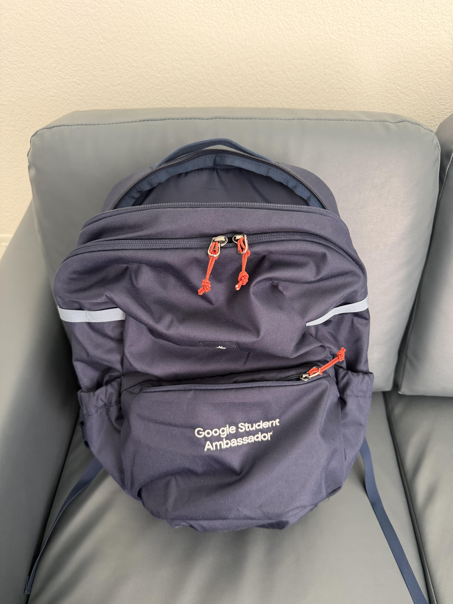

A little more than an object
School and work
This object's personal story appears here.
DES 157A / EVERY PICTURE
Back to my portalA personal archive / Studio 02
A backpack can look ordinary from the outside. But the things I carry say something about what I care about, the responsibilities I balance, and the memories that keep me going.
01 / Unpack the story
Click my backpack to unpack four pieces of my everyday life. The bag itself has a story, too. Hover over each photograph and click it to discover the personal meaning behind it.

Start by clicking the backpack photograph.
A little more than an object
This object's personal story appears here.
The little things add up
These objects may seem ordinary, but each reflects a part of my daily life. Opening the backpack is a way of discovering the experiences that aren't visible at first glance.